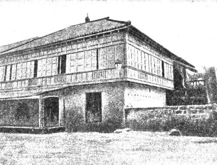
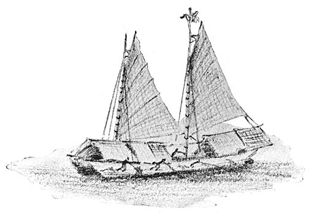

Doña Teodora was said to have suffered the greatest pain during the of her seventh child. Jose. Her daughter Narcisa recalled: "I was nine years of age when my mother gave birth to jose. I recall it vividly because my mother suffered great pain. She labored for a long time. Her pain was later attributed to the fact that Jose's head was bigger than normal" ("Lola Lolay," 2013, para. 8)
Rizal was baptized on June 22, 1861 by the then parish priest of Calamba Rufino Collantes and his godfather Pedro Casanas in St. John the Baptist Parish Church (Filipino: Simbahan ng Parokya ni San Juan Bautista), commonly known as Calamba Church, the oldest Roman Catholic church in Calamba, Laguna, Philippines under the Roman Catholic Diocese of San Pablo. It is located adjacent to Rizal Shrine and is known as the christening site of José Rizal.
(https://en.wikipedia.org/wiki/Saint_John_the_Baptist_Parish_Church_(Calamba))
Jose Rizal was born in Calamba. In 1848, his parents decided to build a home in this town in Laguna, southern Luzon. The name Calamba was derived from kalan-banga, which means 'clay stove" (kalan) and "water jar" (banga).
Jose's adoration of its scenic beauty-punctuated by the sights of the Laguna de Bay. Mount Makiling, palm-covered mountains, curvy hills, and green fields- was recorded in the poem he would later write at Ateneo de Manila in 1876, Un Recuerdo A Mi Pueblo (In Memory of My Town).

The first massive stone house (or bahay na bato) in Calamba was the very birthplace of our national hero. It was a rectangular two-storey building, built of adobe stones and solid wood, with sliding capiz windows. Its ground floor was made of lime and stone, the second floor of hard wood, except for the roof, which was of red tiles. There was an azotea and a water reservoir at the back. Its architectural style and proximity to the church implied Rizal family's wealth and political influence.
In his early childhood, Jose had mastered the alphabet and learned to write and read. His early readings included the Spanish version of the Vulgate Bible. At a young age, he already showed inclinations to the arts. He amazed his family by his pencil drawings, sketches, and moldings of clay. Later in his childhood, he showed special talent in painting and sculpture, wrote a Tagalog play, which was presented at a town fiesta (and later penned a short play in Spanish, which was presented in school).
A phenom is someone who is exceptionally talented or admired, especially an up-and-comer. Rizal, especially during his childhood, was none less than a phenom.
Jose Rizal's first memory, in his infancy, was his happy days in their family garden when he was three years old. Their courtyard contained tropical fruit trees, poultry yard, a carriage house, and a stable for the ponies. Because the young Pepe was weak, sickly, and undersized, he was given the fondest care by his parents, so his father built a nipa cottage for Pepe to play in the daytime.
Memory of his infancy included the nocturnal walk in the town, especially when there was a moon. Jose also recalled the "aya" (nursemaid) relating to the Rizal children some fabulous stories, like those about the fairies, tales of buried treasure, and trees blooming with diamonds.
Another childhood memory was the daily Angelus prayer in their home. Rizal recorded in his memoir that by nightfall, his mother would gather all the children in their home to pray the Angelus. At the early age of three, he started to take a part in the family prayers.
When Concha died of sickness in 1865, Jose mournfully wept at losing her. He later wrote in his memoir, "When I was four years old. I lost my little sister Concha, and then for the first time I shed tears caused by love and grief" ("Memoirs of a Student in Manila," n.d.).
At the age of five, the young Pepe learned to read the Spanish family Bible, which he would refer to later in his writings. Rizal himself remarked that perhaps the education he received since his earliest infancy was what had shaped his habits ("Memoirs of a Student," n.d, para. 3).
As a child, Rizal loved to go to the chapel, pray, participate in novenas, and join religious processions. In Calamba, one of the men he esteemed and respected was the scholarly Catholic priest Leoncio Lopez, the town priest. He used to visit him and listen to his inspiring opinions on current events and thorough life views.
Also at the age of five, Pepe started to make pencil sketches and mold in clay and wax objects, which attracted his fancy. When he was about six years old, his sisters once laughed at him for spending much time making clay and wax images. Initially keeping silent, he then prophetically told them "All right laugh at me now! Someday when I die, people will make monuments and images of me."

When Jose was seven years old, his father provided him the exciting experience of riding a "casco" (a flat-bottomed boat with a roof) on their way to a pilgrimage in Antipolo. The pilgrimage was to fulfill the vow made by Jose's mother to take him to the Shrine of the Virgin of Antipolo should she and her child survive the ordeal of delivery, which nearly caused her life. From Antipolo, Jose and his father proceeded to Manila to visit his sister Saturnina who was at the time studying at the La Concordia College in Sta. Ana.
As a gift, the child Jose received a pony named "Alipato" from his father (Bantug & Ventura, 1997, p. 23). As a child, he loved to ride this pony or take long walks in the meadows and lakeshore with his black dog named "Usman."
The mother also induced Jose to love the arts, literature, and the classics. Before he was eight years old. he had written a drama (some sources say "a Tagalog comedy") which was performed at a local festival and for which the municipal captain rewarded him with two pesos. (Some references specify that it was staged in a Calamba festival and that it was a gobernadorcillo from Paete who purchased the manuscript for two pesos.)
Contrary to the "former" common knowledge however, Rizal did not write the Filipino poem "Sa Aking Mga Kababata/Kabata" (To My Fellow Children). The poem was previously believed to be Rizal's first written poem at the age of eight and was said to have been published posthumously many years after Rizal's death. However, Jose had a preserved correspondence (letters) with his brother Paciano admitting that he (Jose) had only encountered the word "kalayaan" when he was already 21 years old. The term ("kalayaan") was used not just once in the poem "Sa Aking Mga Kababata/Kabata." (For more details concerning this matter, read the article, "Did Jose Rizal Write the Poem "Sa Aking Mga Kabata"?" in Our Happy School.com).
The young Rizal was also interested in magic He read many books on magic He learned different tricks, such as making a coin disappear and making a handkerchief vanish in thin air Some other influences of Rizal's childhood involved his three uncles; Tio Jose Alberto who inspired him to cultivate his artistic ability. Tio Manuel who encouraged him to fortify his frail body through physical exercises. Tio Gregorio who intensified Rizal's avidness to read good books.